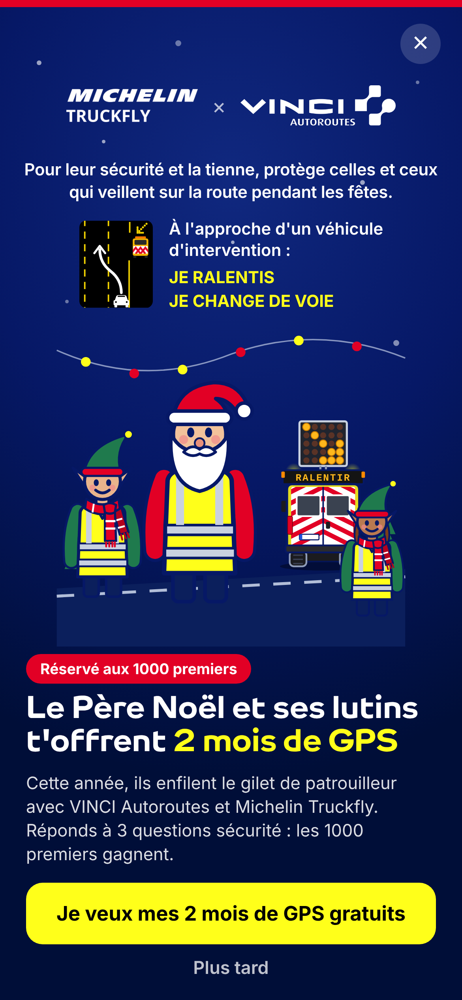
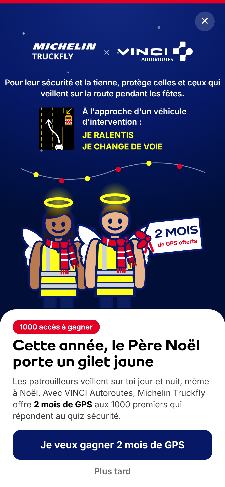
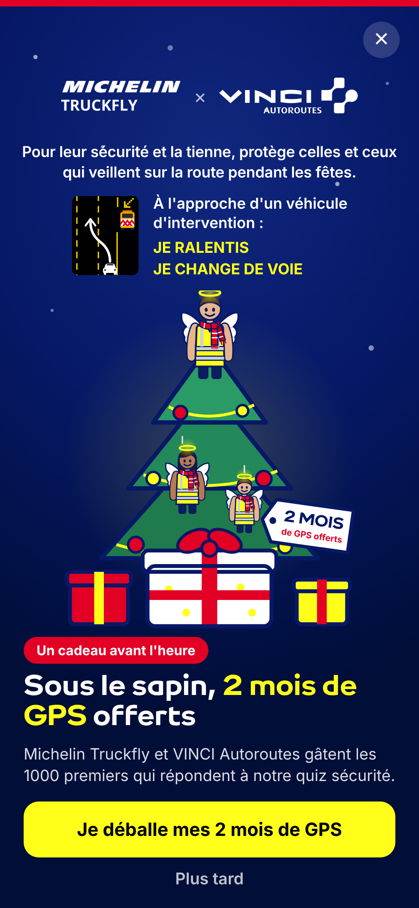

×
×Opération fêtes de fin d'année
Nos anges gardiens :
2 mois de GPS offerts
aux 1000 premiers
Propositions d'interstitiel et quiz sécurité · rendez-vous VINCI Autoroutes

Michelin Truckfly × VINCI AutoroutesDocument de travail
L'opération en bref · opération cofinancée
Un cadeau de fin d'année qui fait passer
le message du corridor de sécurité
2 moisde GPS Michelin Truckfly offerts
1000premiers participants au quiz
3questions sécurité, environ 1 minute
Opération cofinancée
6 922 €Michelin Truckfly
4 710 €VINCI Autoroutes (à prix coûtant)
Le message
Michelin Truckfly et VINCI Autoroutes s'associent pour les fêtes : les patrouilleurs veillent sur les routiers, protégeons-les en respectant le corridor de sécurité.
La cible
Les conducteurs poids lourds qui utilisent l'app Michelin Truckfly, touchés par un interstitiel au lancement de l'app.
Michelin Truckfly × VINCI Autoroutes2
Le parcours
De l'interstitiel à l'activation, en 4 étapes
1
L'interstitiel
S'affiche dans l'app Michelin Truckfly. Le bouton mène au quiz, « Plus tard » ou la croix le ferment.
2
Le quiz sécurité
3 questions sur le corridor de sécurité, l'amende et les bons réflexes en cas de panne.
3
Les coordonnées
Email et téléphone, pré-remplis depuis l'app, plus le consentement.
4
L'activation
Le code des 2 mois de GPS est envoyé par email et SMS. La page de fin rappelle les règles de sécurité.
- Le formulaire se ferme automatiquement à 1000 réponses, avec un message « offre terminée ».
- Une seule participation par adresse email.
- Chaque réponse est rattachée au compte de l'app, ce qui permet d'activer l'offre derrière.
Michelin Truckfly × VINCI Autoroutes3
Les propositions
4 interstitiels au choix
 A · Nos anges gardiensLes patrouilleurs au bord de l'autoroute
A · Nos anges gardiensLes patrouilleurs au bord de l'autoroute
B · Le Père Noël en gilet jauneLes anges et l'étiquette cadeau
C · Un cadeau avant l'heureLe sapin et le cadeauD · Le Père Noël et ses lutinsEn gilet de patrouilleur
Michelin Truckfly × VINCI Autoroutes4
A
Nos anges gardiens
Deux patrouilleurs en gilet jaune, auréole et ailes, au bord de l'autoroute devant leur fourgon de sécurité. L'idée la plus directe : on remercie ceux qui nous protègent.
Titre« Ils veillent sur toi, on t'offre 2 mois de GPS »
BadgeRéservé aux 1000 premiers
BoutonJe veux mes 2 mois de GPS offerts
Michelin Truckfly × VINCI Autoroutes5
B
Le Père Noël porte un gilet jaune
Les deux anges gardiens tiennent une étiquette cadeau « 2 mois de GPS offerts ». La partie basse, sur fond blanc, met le texte en avant.
Titre« Cette année, le Père Noël porte un gilet jaune »
BoutonJe veux gagner 2 mois de GPS
Michelin Truckfly × VINCI Autoroutes6
C
Un cadeau avant l'heure
Un sapin décoré d'anges en gilet jaune, avec le cadeau « 2 mois de GPS » au pied. La version la plus festive, et l'offre est dans le titre.
Titre« Sous le sapin, 2 mois de GPS offerts »
BadgeUn cadeau avant l'heure
BoutonJe déballe mes 2 mois de GPS
Michelin Truckfly × VINCI Autoroutes7
D
Le Père Noël et ses lutins
Le Père Noël et deux lutins enfilent le gilet de patrouilleur, devant le fourgon de sécurité et son panneau « RALENTIR ». Le ton le plus ludique.
Titre« Le Père Noël et ses lutins t'offrent 2 mois de GPS »
BadgeRéservé aux 1000 premiers
BoutonJe veux mes 2 mois de GPS gratuits
Michelin Truckfly × VINCI Autoroutes8
Votre brief
Ce que vous nous avez demandé, et où on le retrouve
| Phrase d'accroche « anges gardiens » | En haut de chaque interstitiel et en ouverture du quiz intégré |
| Pictogramme + « je ralentis, je change de voie » | Sous l'accroche, sur chaque interstitiel intégré |
| Amende de 135 € | Question 2 du quiz intégré |
| Règles de sécurité sur autoroute | Question 3 et page de fin du quiz intégré |
| Le saviez-vous ? | 2 encadrés dans le quiz (chiffre Ipsos 2024, balisages et aires) intégré |
Michelin Truckfly × VINCI Autoroutes9
Le quiz Tally
3 questions sécurité
1. Un véhicule d'intervention est arrêté sur la bande d'arrêt d'urgence, gyrophares allumés. Que fais-tu ?
- Je garde ma voie et ma vitesse
- Je ralentis et je change de voie, ou je m'écarte le plus possible
- Je klaxonne pour signaler ma présence
💡 Le saviez-vous ? 67 % des conducteurs n'appliquent pas systématiquement le corridor de sécurité (Ipsos pour la Fondation VINCI Autoroutes, 2024).
2. Que risques-tu si tu ne respectes pas le corridor de sécurité ?
- Rien, c'est une simple recommandation
- Une amende de 135 €
- Un simple avertissement
Depuis septembre 2018, article R412-11-1 du code de la route.
3. Ton camion tombe en panne sur l'autoroute. Quel est le bon réflexe ?
- Je reste dans ma cabine, ceinture attachée, en attendant les secours
- Feux de détresse, gilet enfilé, je sors et je me mets derrière la glissière
- Je pose mon triangle de pré-signalisation derrière le camion
Pas de triangle sur autoroute : le poser met en danger.
Michelin Truckfly × VINCI Autoroutes10
Après le quiz
Les coordonnées, puis les bons réflexes
Page 2 · Recevoir mon accès
- Email et téléphone, pré-remplis depuis l'app
- Case de consentement
- Le saviez-vous ? sur les balisages et les aires tous les 15 km
- Bouton « Je valide ma participation »
Page de fin · Merci et bonnes fêtes !
- Confirmation : code envoyé par email et SMS
- Les 3 bonnes réponses expliquées
- Les règles de sécurité sur autoroute de votre dépliant : panne, accident, borne orange, 112
- Rappel de l'accroche « anges gardiens »
Michelin Truckfly × VINCI Autoroutes11
À valider ensemble
Prochaines étapes
| Choix de l'interstitiel | A, B, C ou D. Le code de chaque version est déjà prêt à intégrer. |
| Accroche | Version tutoyée, comme dans l'app : « Pour leur sécurité et la tienne, protège tes anges gardiens… ». Ou votre version mot pour mot. |
| Pictogramme et logo | Redessinés d'après votre dépliant : à remplacer par vos fichiers officiels si besoin. |
| Quiz | Validation des questions, des bonnes réponses et des « Le saviez-vous ? ». |
| Règlement et données personnelles | Règlement de l'offre et mention RGPD à finaliser avant diffusion. |
| Calendrier | Date de lancement et durée de diffusion de l'interstitiel. |
Michelin Truckfly × VINCI Autoroutes12